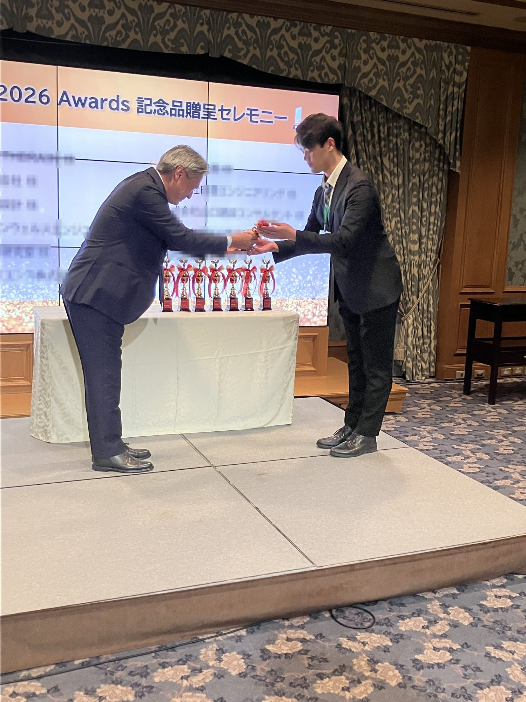

2026年11月6日（金）、Bentley Systems Regional Seminar 2026 Tokyo に参加いたしました。
Bentley Systems Regional Seminar とは
Bentley Systems（ベントレー・システムズ）は、アメリカ・ペンシルベニア州エクストンに本社を置く、設計・建設のソフトウェアを提供する世界的なリーディングカンパニーです。「Bentley Systems Regional Seminar」は、同社が開催している業界向けのセミナーです。
今回は、Bentley製品を活用しているユーザー各社が、実務の現場で直面する課題に対してどのように解決していったか実例を紹介したり、今後のさらなる展望などを紹介していただきました。
参加の様子
今回、当社のYIIの取り組みに対して、記念品贈呈セレモニーにて、参加賞として記念品を頂戴しました。

弊社はこれからも、プラント土木建築設計を通じて、より多くのお客様に満足いただけるよう努めてまいります。
プラント土木建築設計のご相談はこちら
お問い合わせフォーム国内・国外問わずご対応させて頂きます。弊社のサービスの詳細は、サービスページをご覧ください。